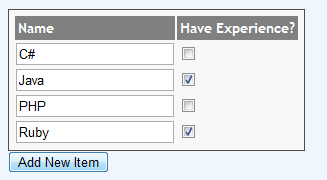

{kind=link}

Adding new Item to a list of items, inline is a very nice feature you can provide to your user. This posts shows 2 different ways to do this in ASP.NET MVC3 and how Modelbinding handles that.
We are going to create a new page where it lists the various Programming Interests a user has. The user will have an option to add a new Record ( Programming interest) to the list present.
Let's create 2 ViewModels(ViewModel is a simple POCO class) for our views. Add the below 2 classes to our project.
public class User
{
public int Id { set; get; }
public string Name { get; set; }
public IList<UserInterest> Interests { get; set; }
}
public class UserInterest
{
public int Id { set; get; }
public string InterestText { set; get; }
public bool IsExperienced { set; get; }
}
Now I am going to create a GET action which returns a User class object with his interests.
public ActionResult ClientSideCreation()
{
var usr = new User();
usr.Name = "Jon Skeet";
usr.Interests = GetUserInterests();
return View(usr);
}
This action is simply creating an object and setting the Name property and Setting the Interests collection. GetUserInterests is a method which returns a list of UserInterest object.
Now to handle the collection Property of our Model, Let's create an Editor template called UserInterest.cshtml under Home\EditorTempaltes.
Now we will use Html.EditorFor HTML Helper method to bring this editor template to our main view.
@model MvcApplication2.Models.User
@using(Html.BeginForm())
{
<h3>Name : @Model.Name</h3>
<h4>Interests</h4>
<div class="divIntersts">
<table id="container">
<tr>
<th>Name</th><th>Have Experience?</th>
</tr>
@Html.EditorFor(x => x.Interests)
</table>
</div>
<p><input type="submit" value="Save" /></p>
}
We are done with that. Running the project will show the output like this.
note that this does not have any feature for the user to add the new record to the collection.
I am going to make some changes to our view.
1) Add a button called " Add new Item " to our html markup.
<input type="button" id="btnAdd" value="Add New Item" />
2) Add some javascript code to create the form fields when user clicks on the Add New Item button and append that to our table which holds the collection.
$(function () {
$("#btnAdd").click(function (e) {
var itemIndex = $("#container input.iHidden").length;
e.preventDefault();
var newItem = $("<tr><td><input id='Interests_" + itemIndex + "__Id' type='hidden' value='' class='iHidden' name='Interests[" + itemIndex + "].Id' /><input type='text' id='Interests_" + itemIndex + "__InterestText' name='Interests[" + itemIndex + "].InterestText'/></td><td><input type='checkbox' value='true' id='Interests_" + itemIndex + "__IsExperienced' name='Interests[" + itemIndex + "].IsExperienced' /></tr>");
$("#container").append(newItem);
});
});
So the result of running our updated project will be like this. there is a "Add New Item" button and clicking that will add new record to our existing table.

Now When the user posts the form, the MVC Model binding feature will bind the newly added items as well. You can check that by putting a breakpoint in the HttpPost action method.
The trick is to keep the id property value of the html element in this format.
CollectionName_ItemIndex__PropertyName
and name property value in this format
CollectionName[ItemIndex].PropertyName
If your Collection item has many fields, It will be hard to write javascript code for creating the form elements. In that case, You may consider doing it in the server side.
So i will update my javascript code like this.
$(function () {
$("#btnAdd").click(function (e) {
var itemIndex = $("#container input.iHidden").length;
e.preventDefault();
$.get("@Url.Action("NewInterestRow", "Home")/"+itemIndex,function(data){
$("#container").append(data);
});
});
});
You can see that we are not building the html in our client side code here. Instead we are mkaing an ajax call to the NewInterestRow action method and passing the Index of the new item. So we need to create that action method like this.
public ActionResult NewInterestRow(int id)
{
var interest = new UserInterest { Id=id};
return View("Partial/NewInterestRow",interest);
}
It simply creates an object of our UserInterest class and set the Id property value of it as the values passed to this method (which is the Item Index of the new item to be created) .Then we are passing that object to a partial view called NewInterestRow. So Lets create a new View under Home/Partial called NewInterestRow.cshtml with the below content.
@model MvcApplication2.Models.UserInterest
@{ Layout = null; }
<tr>
<td>
<input type="hidden" id="Interests_@(Model.Id)__Id" class="iHidden" name='Interests[@Model.Id].Id' />
<input type='text' id='Interests_@(Model.Id)__InterestText' name='Interests[@Model.Id].InterestText'/>
</td>
<td>
<input type='checkbox' value='true' id='Interests_@(Model.Id)__IsExperienced' name='Interests[@Model.Id].IsExperienced' />
</td>
</tr>
This View also creates the same HTML elements we created at client side previously, with the same name /ID convention we need for the Model binding to work.
Summary : Here we showed 2 ways to add dynamic form fields to an existing collection which gives a nice user experience and how MVC Model binding works for those new elements. The main thing to remember is to keep the format of the name and id property values. Model binding will work for the new elements only if they follow the format.
You can download the sample source code here to see how it works.
{kind=link}
{kind=link}